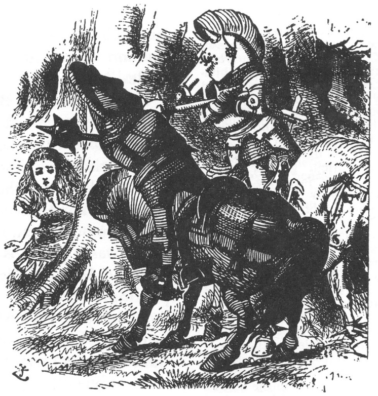
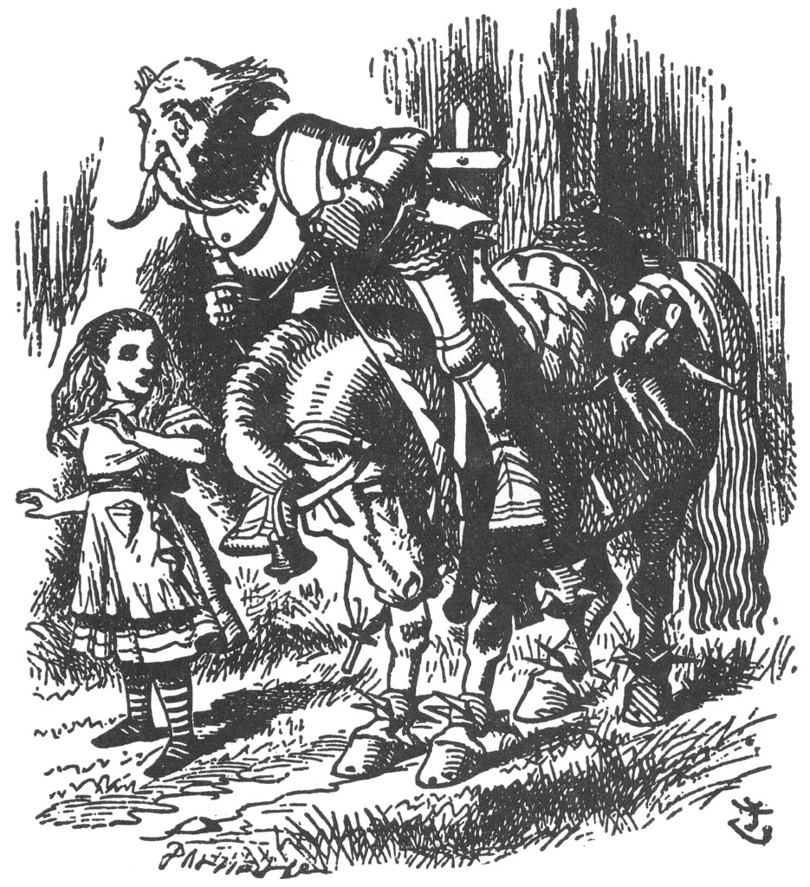
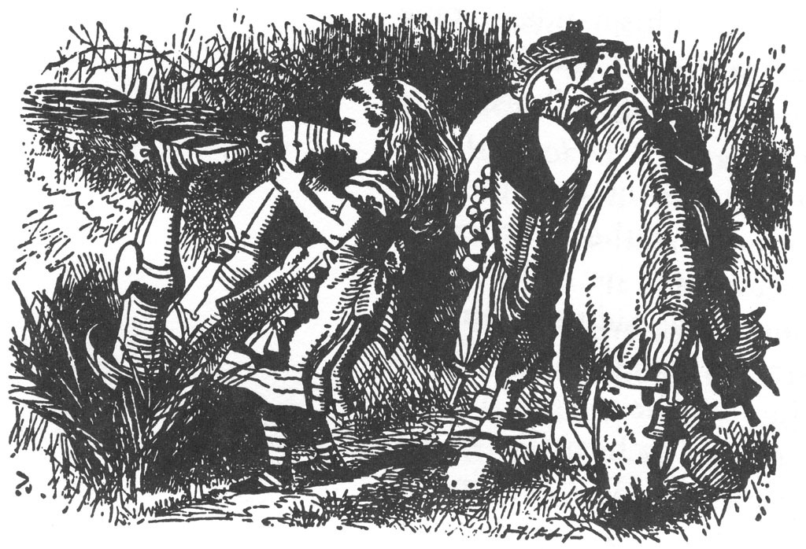
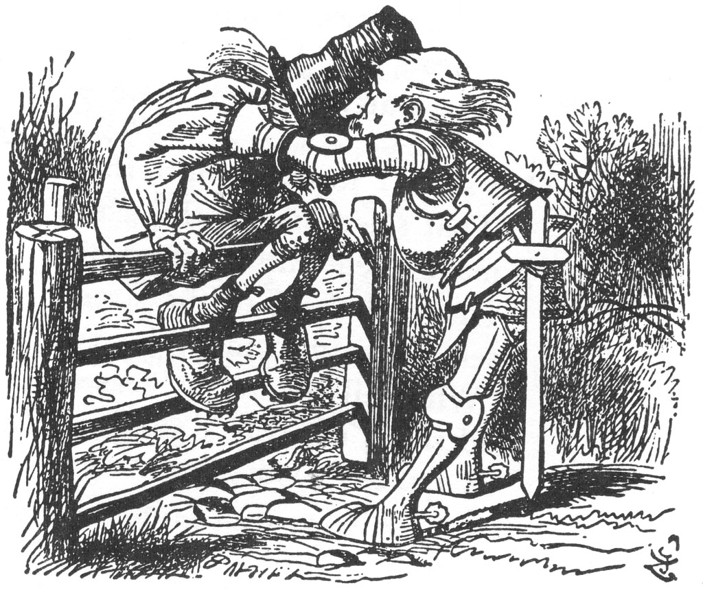

“O Benim Buluşum”
Derken gürültü gitgide yok oldu, ta ki her tarafı bir ölüm sessizliği alıp da, Alice korku içinde kafasını kaldırıncaya değin. Ortada kimse görünmüyordu; ilk önce Aslan, Tekboynuz ve şu tuhaf Ang-lo-Sakson Ulaklarla ilgili bir düş gördüğünü düşündü. Ne ki, üzümlü keki üzerinde kesmeye çalıştığı o kocaman tabak hâlâ ayaklarının dibindeydi. “Demek ki, düş görmüyordum,” dedi kendi kendine “tabii ki... tabii ki hepimiz aynı düşün bir parçası olmadığımız sürece. Sadece umarım ki bu benim düşümdür, Kızıl Kral’ın değil! Bir başkasının düşüne ait olmak hiç hoşuma gitmez,” diye devam etti sızlanan bir ses tonuyla: “Gidip onu uyandırayım da, ne olmuş bir göreyim!”
Tam o anda, “Hey! Hey! Şah!” bağrışıyla düşünceleri bölündü; kızıl zırh giyinmiş Şövalye, elindeki kocaman gürzünü savura savu-ra Alice’e doğru dörtnala geliyordu. Yanına vardığı anda atı birdenbire durunca tepetaklak düşerken “Benim tutsağımsın!” diye bağırdı.
Alice, ürkmüştü ürkmesine de, o anki korkusu kendisinden çok, Şövalye içindi, yeniden ata bindiği sırada onu kaygıyla İzledi. Eyerine doğru dürüst oturur oturmaz, daha “Sen benim...” demeye kalmamıştı ki, başka bir ses araya girip “Hey! Hey! Şah!” dedi; Alice şaşkınlık içinde yeni düşmanını görmek için dönüp etrafına bakındı.
Bu sefer gelen Beyaz Şövalye idi. Alice’in yanına yaklaşıp durdu ve tıpkı Kızıl Şövalye gibi o da atından tepetaklak yere düştü; sonra yeniden atına bindi, iki Şövalye hiç konuşmadan oturup birbirlerine baktılar. Alice, şaşkınlık içinde bir birine, bir ötekine bakıyordu.
“Bilirsin ya, o benim tutsağım!” dedi Kızıl Şövalye sonunda.
“Evet, ama sonra gelip onu kurtardım!” diye yanıt verdi Beyaz Şövalye.
“Peki, onun için dövüşmeliyiz,” dedi Kızıl Şövalye, miğferini (eyerinde asılı duruyordu ve at kafası şeklinde bir şeydi) alıp başına taktığı sırada.
“Savaş Kurallarına uyacaksın, tabii ki,” dedi Beyaz Şövalye, kendi miğferini takarken.
“Ben hep uyarım,” dedi Kızıl Şövalye ve gürültü patırtı içinde öyle bir öfkeyle birbirlerine vurmaya başladılar ki, Alice darbelere hedef olmamak için bir ağacın arkasına saklandı.
“Şimdi, acaba Savaş Kuralları nelerdir?” dedi Alice kendi kendine, bir yandan da saklandığı yerden korka korka dövüşe bakmaya çalışarak: “Öyle gözüküyor ki birinci Kural; eğer bir şövalye diğerine vurursa, onu attan düşürür, yok eğer ıskalarsa, kendisi tepetaklak aşağı düşer... Öyle gözüküyor ki bir diğer Kural da; sanki gölge oyunundaki kuklalar gibi gürzlerini kollarının altında tutmaları. Yere düştüklerinde nasıl bir gürültü çıkarıyorlar böyle. Tıpkı ocak demirlerinin şömine önündeki parmaklığa düşmesi gibi! Atlar da ne kadar sessiz! Sanki sadece birer masaymışlar gibi, nasıl da binilip inilmelerine müsaade ediyorlar öyle!”
Öyle görünüyordu ki, Alice’in fark etmediği bir başka Savaş Kuralı da Şövalyelerin hep tepe üstü düşmeleriydi, dövüş ikisinin de yan yana bu şekilde düşmesiyle sona erdi; yeniden ayağa kalktıklarında, el sıkıştılar ve Kızıl Şövalye atına binip dörtnala oradan uzaklaştı.

“Çok şerefli bir zaferdi, değil mi?” dedi Beyaz Şövalye, nefes nefese Alice’in yanına geldiğinde.
“Bilmiyorum,” dedi Alice kuşkuyla. “Kimsenin tutsağı olmak istemiyorum. Kraliçe olmak istiyorum!
“Bir sonraki çayı geçtiğinde olacaksın,” dedi Beyaz Şövalye. “Korunun bitimine kadar seni koruyacağım... sonra biliyorsun geri dönmek zorundayım. Bu benim hamlemin sonu.”
“Teşekkür ederim,” dedi Alice, “miğferini çıkarmana yardım edebilir miyim?” Bu işi kendi başına yapamayacağı açıktı; neyse ki Alice sonunda onu miğferden kurtarmayı başardı.
“Şimdi daha kolay nefes alınıyor,” dedi Şövalye, sonra da iki eliyle kabarık saçlarını arkaya iterek sevecen yüzü ve yumuşak bakışlı kocaman gözleriyle dönüp Alice’e baktı. Böyle tuhaf görünüşlü bir askeri ömründe hiç görmediğini düşündü Alice.
Üzerine iyi oturmayan teneke bir zırh giymişti ve omuzlarına baş aşağı asılı ve kapağı açılmış biraz garip bir kutusu vardı. Alice, büyük bir merak içinde kutuya baktı.
“Görüyorum ki küçük kutumu çok beğendin,” dedi Şövalye dostça. “Bu benim kendi buluşum... kıyafetlerimi ve sandviçlerimi koymak için. Görüyorsun baş aşağı tutuyorum, böylece yağmur içeri girmiyor.”
“Ama içindeki eşyalar dışarı dökülebilir,” dedi Alice kibarca, “Kapağın açık olduğunu biliyor musunuz?”
“Bilmiyordum,” dedi Şövalye, yüzünden bir sıkıntı gölgesi geçerek. “O zaman her şey düşmüş olmalı! Kutunun da onlar olmadan hiçbir anlamı yok ki.” Konuştuğu sırada bir yandan da kutuyu çözdü ve onu alıp tam çalılıklara atmak üzereydi ki, aniden aklına bir şey geldi ve kutuyu alıp dikkatlice bir ağaca astı. “Neden böyle yaptığımı tahmin edebilir misin?” dedi Alice’e.
Alice, hayır anlamında başını salladı.
“Belki arılar içine yuva yapar diyorum... o zaman da bal alırım.”
“Ama eyerinize asılı arı kovanı... ya da onu benzer bir şey... var,” dedi Alice.
“Evet, bu çok iyi bir kovan,” dedi Şövalye hoşnutsuz bir ses tonuyla, “en iyisinden. Ama daha tek bir arı bile yanına yaklaşmadı. Diğeri de bir fare kapanı. Galiba fareler arıları uzaklaştırıyor... ya da arılar fareleri, bilmiyorum işte hangisi hangisini ise.”
“Niçin fare kapanı, çok merak ediyorum,” dedi Alice. “At sırtında fare olması pek olası değil gibi.”
“Pek olmayabilir,” dedi Şövalye, “ama olur ya, gelirlerse, etrafımda koşuşturmalarını pek istemem.”
“Görüyorsun ya,” diye devam etti bir duraksamadan sonra, her şeye hazırlıklı olmak iyi bir şey. Bu yüzden işte atın da ayaklarında halhal var.”
“Ama onlar ne için?” diye sordu Alice pek şaşırarak.
“Köpekbalığı ısırıklarından korunmak için,” diye yanıtladı Şövalye. “Bu benim kendi buluşum. Şimdi bana yardım et. Korunun bitimine kadar seninle geleceğim... Bu tabak ne için?”
“Üzümlü kek içindi,” dedi Alice.
“Bunu da beraberimizde götürsek iyi olur,” dedi Şövalye. “Olur ya üzümlü kek bulursak, işimize yarar. Şu torbaya koymama yardım et.”
Alice, torbayı dikkatlice açarak tutsa da, bu işi başarmak epey zaman almıştı, çünkü Şövalye tabağı koymada öyle beceriksizdi ki; ilk iki ya da üç denemesinde tabak yerine torbaya kendisi düştü. “Gördüğün gibi epey zor bir iş,” dedi tabağı en nihayet torbaya soktuklarında; “torbada çok sayıda şamdan var.” Sonra da torbayı alıp eyere astı, eyer zaten havuç demetleri, ocak demirleri ve daha birçok başka şeyle yüklenmişti.
“Umarım saçlarını iyi bağlamışsındır,” diye devam etti Şövalye, yola çıktıkları sırada.
“Her zamanki gibi,” dedi Alice gülümseyerek.
“Bu yeterli sayılmaz,” dedi Şövalye endişeli endişeli. “Görüyorsun ki rüzgâr burada zehir zemberek. Çorba gibi.”
“Saçın uçuşmasını engelleyen bir şey buldunuz mu?” diye sordu Alice.
“Henüz değil,” dedi Şövalye, “ama dökülmesini engelleyen bir planım var.”
“Dinlemeyi çok isterdim.”
“Önce dimdik bir çubuk alırsın,” dedi Şövalye. “Sonra, saçlarını sarmaşık gibi çubuğa sararsın. Saçın dökülmesinin esas nedeni aşağıya doğru sarkmasıdır... yukarıya doğru olan şeyler dökülmezler ya hani. Bu benim buluşum. İstersen deneyebilirsin.”
Alice'e pek yeterli bir buluş gibi gelmedi, bu düşünce karşısında şaşırıp kalarak ve ara ara da iyi bir binici olmadığı kesin olan zavallı Şövalye’ye yardım etmek için durarak sessizlik içinde birkaç dakika yürüdü.
At ne zaman dursa (bunu çok sık yapıyordu), Şövalye öne doğru düşüyordu; atın her hareketinde de (ve at bunu da genellikle çok aniden yapıyordu) arkaya doğru düşüyordu. Yoksa geri kalan zamanlarda ara ara yanlara doğru düşme alışkanlığı dışında fena gitmiyordu ve genellikle de Alice’in yürüdüğü tarafa doğru düştüğünden, az sonra Alice en iyi fikrin ata bu kadar yakın yürümeme-k olduğunu keşfetti.

“Kusura bakmayın ama binicilikte fazla deneyimli değilsiniz,” demeye kalkıştı Alice, Şövalye’nin beşinci kez yuvarlanışında ona yardım ettiği sırada.
Şövalye buna çok şaşırmıştı, birazcık da kırılmıştı. “Neden böyle söylüyorsun?” diye sordu, güçbela tekrar eyere tırmanırken, bu arada diğer tarafa düşmemek için bir eliyle Alice’in saçlarını sımsıkı tutuyordu.
“Çünkü insanlar deneyimli olduklarında, bu kadar sık düşmezler.”
“Çok deneyimim var,” dedi Şövalye büyük bir ciddiyetle: “Çok!”
Alice’in aklına, “öyle mi?” demekten başka bir şey gelmedi, ne var ki bunu olabildiğince iyi niyetle söylemişti. Bundan sonra kısa bir süre sessizlik içinde yollarına devam ettiler; Şövalye gözleri kapalı kendi kendine söylenip duruyordu; Alice de bir daha ne zaman düşecek diye endişeyle ona bakıyordu.
“Yüce binicilik sanatı,” diye aniden yüksek sesle konuşmaya başladı Şövalye, konuşurken sağ kolunu da sallıyordu, “dengeyi...” işte tam burada cümlesi başladığı gibi aniden bitti, çünkü Şövalye tam Alice’in yürüdüğü yere kafa üstü külçe gibi düştü. Alice bu sefer çok korkmuştu, onu yerden kaldırırken, endişeli bir ses tonuyla, “Umarım kemikleriniz kırılmamıştır,” dedi.
“Sözünü etmeye bile değmez,” dedi Şövalye, sanki bir iki kemiğinin kırılması pek umurunda değilmiş gibi. “Yüce binicilik sanatı, daha önce de söylediğim gibi... dengeyi sağlamak üzerine kuruludur. Bunun gibi, biliyorsun ki...”
Ne demek istediğini göstermek için dizginleri elinden bıraktı ve kollarını iki yana açtı, bu sefer de tam atın ayaklarının altında yere kapaklandı.
“Çok deneyim!” diye sürekli tekrarlayıp duruyordu, Alice’in onu ayağa kaldırdığı sırada. “Çok deneyim!”
“Bu çok saçma!” diye bağırdı Alice, sonunda sabrı tükenerek. “Sizin ancak tekerlekli tahta bir atınız olmalı, bu şart!”
“Bu türleri sarsmadan mı gider!” diye sordu Şövalye büyük bir ilgiyle, yeniden tam düşmek üzereyken kollarını atın boynuna dolamıştı.
“Canlı bir attan çok daha az sarsar,” dedi Alice, olabildiğince engel olmaya çalışsa da küçük bir kahkaha atarak.
“Bir tane alayım,” dedi Şövalye düşünceli bir şekilde kendi kendine. “Bir ya da iki... Birkaç.”
Bundan sonra kısa bir sessizlik oldu; ardından Şövalye sözlerine devam etti. “Yeni şeyler keşfetmede üstüme yoktur. Şimdi, sanırım beni en son ayağa kaldırdığında, yüzümdeki düşünceli ifadeyi fark etmişsindir.”
“Birazcık ciddiydiniz,” dedi Alice.
“Şey, tam o anda bir bahçe kapısı üzerinden nasıl aranılacağına ilişkin yeni bir yöntem icat etmekteydim... Duymak ister misin?” “Çok isterim,” dedi Alice kibarca.
“Bu fikrin aklıma nasıl geldiğini söyleyeyim sana,” dedi Şövalye. “Dedim ki kendi kendime, ‘Tek sorun ayaklarla; kafa zaten yeterince yüksek.’ Bu yüzden kapının üstüne önce başımı koyarım... o zaman kafa yeterince yüksekte olur... sonra amuda kalkarım... O zaman ayaklar da yeterince yüksekte olur... Sonra atlarım, anladın mı?”
“Evet, sanırım böyle yaptığınızda atlarsınız,” dedi Alice düşünceli bir şekilde; “fakat bunun çok zor olduğunu düşünmüyor musunuz?”
“Henüz denemedim,” dedi Şövalye ciddi bir şekilde. “O yüzden kesin bir şey söyleyemem... ama biraz zor olacağından endişeliyim.”
Şövalye’nin canı buna o kadar sıkılmıştı ki, Alice hemen konuyu değiştirdi. “Ne garip bir miğferiniz var!” dedi neşeyle. “Bu da mı sizin buluşunuz?”
Şövalye, eyere asılı miğferine gururla bakarak, “Evet!” dedi, “ama bundan daha iyisini de yaptım... Tıpkı bir kelle şekerine benziyor. Ne zaman onu kullansam, attan düştüğümde, doğrudan yere değen hep o oluyordu. Anlayacağın, böylece yere düşme mesafem çok kısalıyordu... Ama, tabii ki içine düşme tehlikesi de vardı. Bu bir keresinde başıma gelmişti... Daha da kötüsü, ben daha içinden çıkamadan diğer Beyaz Şövalye gelip, alıp başına taktı. Kendi miğferi sanmış.”
Şövalye bunları anlatırken öyle vakur duruyordu ki, Alice gülmeye cesaret edemedi. “Korkarım ki onu incitmişsinizdir,” dedi Alice titrek bir ses tonuyla, “kafasının üstündeydiniz ya.”
“Tekme atmak zorunda kaldım, tabii ki,” dedi Şövalye ciddi bir ses tonuyla. “Bunun üzerine o da miğferi çıkardı hemen... Ama dışarı çıkmam saatler aldı. Çok sıkışmıştım... okul çocukları gibi hani.”
“Fakat bu farklı bir sıkışma, “diye itiraz etti Alice.
Şövalye başını salladı. “Her bakımdan sıkışmıştım, inan bana!” dedi. Bunu söylediği sırada heyecan içinde ellerini yukarı kaldırdı ve ansızın eyerden yuvarlanıp derin bir hendeğe balıklama düştü.
Alice hendeğin kenarına koşup onu aradı. Şövalye bir süredir gayet iyi gittiğinden, bu düşme Alice’i çok şaşırtmıştı, bu sefer şövalyenin gerçekten kendisini incitmesinden korkmuştu. Neyse ki, ayak tabanları dışında başka bir yerini görmese de, her zamanki ses tonuyla konuştuğunu duyunca rahatladı. “Her bakımdan sıkışmıştım,” diye tekrarladı; “fakat onun bir başkasının miğferini takması... hem de içindeki adamla... tam bir dikkatsizlikti.”
“Baş aşağıyayken nasıl böyle rahat konuşabiliyorsunuz?” diye sordu Alice, bu sırada ayaklarından onu çekip, kenardaki yığının üzerine uzattı.
Şövalye bu soru karşısında çok şaşırmıştı. “Bedenimin nerede olduğunun ne önemi var ki?” dedi. “Benim kafam yine aynı şekilde çalışıyor. İşin doğrusu, ne kadar başaşağıyaysam, o kadar çok yeni şeyler keşfedebiliyorum.”

“Şimdi, şu ana kadar yaptığım en zekice şey,” diye devam etti kısa bir duraksamadan sonra, “sofrada ana yemekler yendiği sırada, yeni bir tatlı icat etmekti.”
“Yani onu bir sonraki servise yetiştirmek mi?” dedi Alice. “Olur şey değil, çok hızlı bir işmiş doğrusu.”
“Eh, bir sonraki servis için değil,” dedi Şövalye yavaşça düşünceli bir ses tonuyla, “yok, yok kesinlikle bir ‘sonraki servis’ için değil.”
“O zaman bir sonraki gün için olmalı. Sanırım bir akşam yemeğinde iki tatlı servisi alınmaz, değil mi?”
“Eh, bir sonraki gün için değil,” diye tekrarladı Şövalye daha önceki gibi. “Bir sonraki gün için değil. Aslında,” diye devam etti başını önce eğip, sesini gittikçe kısarak, “o tatlının daha önce hiç yapılmış olduğunu bile sanmıyorum! Aslında, yapılabileceğini de sanmıyorum! Yine de, akla gelecek en zekice tatlıydı.”
“Nelerden yapılmasını tasarladınız?” diye sordu Alice, Şöval-ye’nin morali oldukça bozuk gözüktüğünden, onu neşelendirmek ümidiyle.
“Önce kurutma kâğıdını alıyorsun,” diye karşılık verdi Şövalye iniltiyle.
“Kusura bakmayın ama bu güzel olmaz...”
“Tek başına olmaz,” diye araya girdi hemen: “fakat başka şeylerle karıştırıldığında, nasıl değişiyor bir bilsen... örneğin barutla, balmumuyla. Burada senden ayrılmam gerekiyor.”
Alice, şaşırıp öylece kalakalmıştı; aklında sadece tatlı vardı.
“Çok üzgünsün,” dedi Şövalye kaygılı bir ses tonuyla. “Seni rahatlatacak bir şarkı söyleyeyim sana.”
“Çok uzun mu?” diye sordu Alice, çünkü o gün epeyce şiir dinlemişti.
“Uzun,” dedi Şövalye, “ama çok çok güzel. Şarkımı dinleyen herkesin... ya gözünden yaşlar aktı, ya da...”
“Ya da ne?” dedi Alice, Şövalye birden susmuştu.
“Ya da akmadı, işte. Şarkının adı ‘Mezgit’in Çözleri' diye bilinir.”
“A, bu şarkının adı, öyle mi?” dedi Alice, ilgilendiğini göstermeye çalışarak.
“Hayır, sen anlamadın,” dedi Şövalye, birazcık sinirlenerek. “Adı böyle bilinir. Asıl adı, ‘Yaşlı Başlı Adam’.”
“O halde, ‘bu şarkı böyle mi bilinir?’ demeliydim,” diye düzeltti kendini Alice.
“Hayır, öyle dememeliydin; bu başka bir şey. Şarkıya, ‘Yollar ve Yolaklar* denir: ama bu sadece denilen şey, hani!”
“Eh, şarkı ne o zaman?” dedi Alice alıklaşmış bir halde.
“Ona geliyorum işte,” dedi Şövalye. “Şarkının asıl adı ‘Oturmuştu Bahçe Kapısının Üstüne’, melodisini de ben yaptım.”
Böyle söyleyerek, atını durdurdu, dizginleri bıraktı; sonra da tek eliyle tempo tutarak, yüzündeki o kibar ve budala ifade içinde beliren hafif gülümsemesiyle başladı şarkıyı söylemeye.
Alice’in, Ayna’nın içine yaptığı yolculukta gördüğü bütün o tuhaf şeyler içerisinde, aklında en net kalan şey buydu. Yıllar sonra bile, sanki bütün bunlar daha dün olmuş gibi her şeyi anımsayabiliyordu... Şövalye’nin o sevecen mavi gözleri ve kibar gülüşü... batan güneşin gözleri kamaştıran bir ışık aleviyle zırhındaki parıldayışı ve saçlarındaki ışıltısı... boynundan aşağı sarkan dizginleriyle, ayaklarının dibindeki çimenleri yerken yavaşça oraya buraya kımıldayıp duran atı... arkadaki ormanın kara gölgeleri... bir eliyle gözlerini gölgeleyip bütün bunları bir resim gibi belleğine kazıdı; bir ağaca dayanıp bu tuhaf İkiliyi seyrederek, yarı uykulu bir halde şarkının hüzünlü müziğini dinlemeye koyuldu.
“Fakat bu melodi onun değil ki,” dedi Alice kendi kendine, “‘Hepsini verdim sana, daha isteme benden’in melodisi bu.” Durup şarkıyı çok dikkatlice dinledi, ama gözünden bir damla bile yaş gelmedi.
“Anlatacağım her şeyi olabildiğince Anlatacak fazla bir şey olmasa da Bir adam gördüm yaşlı başlıca
Oturmuştu bahçe kapısının üstüne ‘Kimsin sen?’ dedim yaşlı adama ‘Neyle geçinirsin hele bir söyle,’
Damla damla aktı cevabı beynime Elekten akan sular misali.
Dedi ki, ‘Kelebekler ararım
Uyurlarken buğdayların arasında:
Etli turtayı onlardan yaparım,
Satarım turtaları sokaklarda,
Satarım onları insanlara,
Fırtınalı denizlere yelken açanlara.
İşte böyle çıkarırım ekmeğimi...
Üç kuruştan fazla etmez kazancım hani.’
Ama evirip çeviriyordum kafamda şu planı Nasıl boyarım yeşile insanların bıyıklarını Nasıl açarım kocaman bir yelpazeyi Görülmesin diye bıyıklar hani; Olmadığından verecek bir cevabım Yaşlı adamın dediklerine ‘Hadi söyle nasıl geçinirsin?’ diye bağırdım Ve güm güm vurdum kafasına kafasına
O yumuşacık konuşmasıyla başladı masala: Dedi ki, ‘Dolaşır dururum,
Ne zaman bir dere görsem mesela,
Onu hemen tutuştururum;
Dereden bir madde yaparlar
Rowland saç yağı derler adına... Hepsi hepsi iki buçuk peni verirler Çektiğim onca zahmetin karşılığına.

Dedim şu işe bir çare bulayım da Besleyeyim birilerini sulu hamurla.
İşte böylece her geçen günde Şişmanlasınlar az biraz daha.
Bir o yana salladım onu bir bu yana, Yüzü mosmor kesilinceye değin.
Bağırdım alabildiğine, ‘Söyle bana Neyle geçinirsin, nedir işin?’
Dedi ki, ‘Mezgit gözü avlarım
Pırıl pırıl süpürge otları arasında,
Yelek düğmeleri yaparım
Onlardan da o ıssız gecede.
Altın karşılığı satmam bunları
Ne de veririm gümüş sikkeye,
Satarım yedi penilik bakıra,
O da dokuz düğmeye.
Ararım tereyağlı dürüm,
Kazı yaparak şu yerlerde;
Kimi yengeçlere ökse kurarım.
Kimi de çimenli tepeciklerde Fayton tekerleri ararım.
İşte böyle (burada göz kırpıyor) ‘Sağlarım geçimimi...
Pek bir mutlu kaldırıyorum Sağlığınıza kadehimi.'
Duymuştum ne dediğini daha yeni Zira tamamlamıştım tasarımı; Koruyayım diye pastan Menai Köprüsü’nü Ne dersiniz onu şarapta kaynatayım mı? Çok teşekkür ettim söylediği için bana Nasıl sağladığını geçimini,
Hele bir de sağlığıma Kaldırdığı için kadehini.
Ve şimdi ne zaman koysam Parmağımı zamkın içine Ya da sağ ayağımı çılgınca soksam Sol ayakkabımın içine Ya da ayak parmağı mm üstüne Ağırca bir şey düşürsem Ağlarım, anımsarım bunlarla Eskilerden tanıdığım o yaşlıca adamı... Bakışları yumuş ak, konuşması yavaşça Saçları kardan beyaz
Yüzü derseniz benzer kargaya
Gözleri kor ateş gibi parlak
Acı çekmekten çatlak
Sallanıp durur öne arkaya
Ağzının içinde bir şeyler geveler durur
Sanki içi hamurla dolu
Bufalo gibi burnundan solur...
Yıllar yıllar evvelinin o yaz akşamı
Oturmuştu bahçe kapısının üstüne.”
Şövalye, baladın son bölümünü okuduğu sırada, dizginleri topladı ve atının başını daha önceden geldiği yöne doğru yöneltti. “Sadece birkaç metrelik yolun kaldı,” dedi Şövalye, “tepeden aşağıya şu küçük çayı geçtikten sonra, Kraliçe olacaksın... Ama önce burada kal ve beni uğurla, olur mu?” diye ekledi Alice’in hevesle dönüp ilerlere baktığı sırada. “Uzun sürmez. Burada bekleyip, ben şu dönemece varınca bana mendil sallar mısın? Bu bana cesaret verir diye düşünüyorum.”
“Tabii ki beklerim,” dedi Alice. “Bu kadar uzaklara geldiğiniz için çok teşekkür ederim... şarkı için de teşekkür ederim... Çok sevdim doğrusu.”
“Umarım doğrudur,” dedi Şövalye şüpheyle, “ama beklediğim kadar ağlamadın!”
Böylece tokalaştılar, sonra da Şövalye atını ormana doğru sürüp yavaşça oradan uzaklaştı. “Umarım onu uğurlamak çok zaman almaz,” dedi Alice kendi kendine, durup arkasından bakarken. “İşte gidiyor! Tabii her zamanki gibi tepe üstü! Neyse, atına yeniden kolayca biniyor... atın üzerine bu kadar çok şey asılı olması sayesinde...” Böylece Alice atın yol boyunca sallana saliana gidişini ve Şövalye’nin bir o yana bir bu yana düşüşünü seyrederken bir yandan da konuşmasını sürdürüyordu. Dördüncü ya da beşinci tepetaklak olmadan sonra Şövalye dönemece ulaştı, o zaman Alice ona mendil salladı ve gözden kayboluncaya kadar orada bekledi.
“Umarım bu ona cesaret vermiştir,” dedi Alice tepe boyunca aşağıya doğru koşmak üzere döndüğü sırada: “İşte o en son çay ve sonra Kraliçe olmak! Kulağa ne muhteşem geliyor!” Birkaç adım onu çayın kenarına götürdü. “Nihayet Sekizinci Kare!” diye çığlık attı, karşıya zıplayıp kendini küçük çiçek yataklarıyla beneklenmiş yosun gibi yumuşacık çimenlerin üstüne attı. “Ah, buraya gelmekten ne kadar mutluyum! Peki, kafamdaki bu şey de ne?” diye haykırdı dehşete düşerek, bu sırada ellerini yukarı kaldırıp başını sımsıkı saran çok ağır bir şeye değdirmişti.
“Fakat ben bilmeden nasıl olur da bu başıma konmuş olabilir?” dedi kendi kendine, ardından da nasıl bir şey olabileceğini anlayabilmek için onu alıp kucağına koydu.
Bu altın bir taçtı.